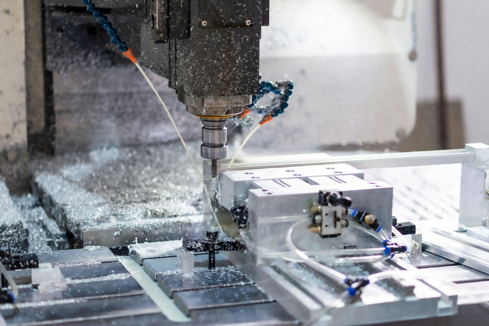
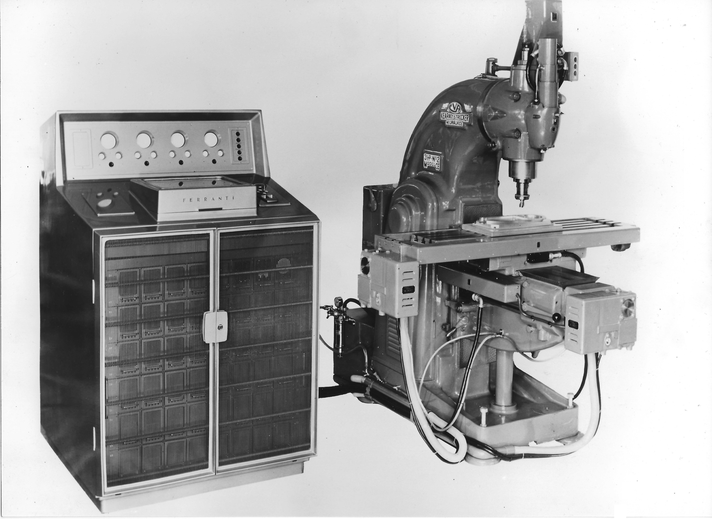
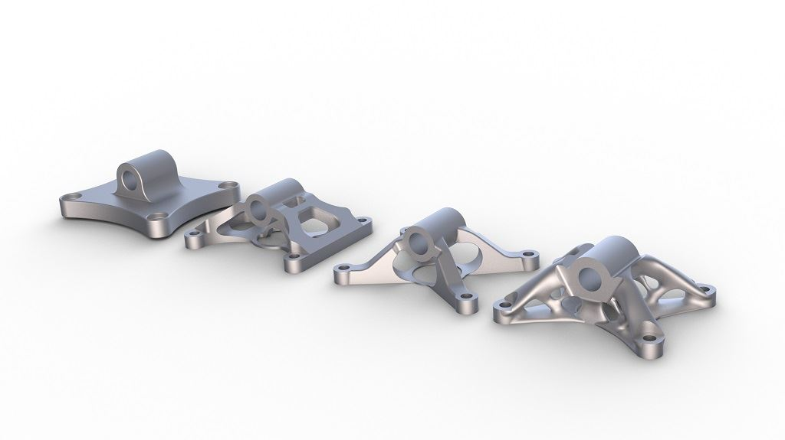

CNC, or Computer Numerical Control, is the process of using a computer to control the movement of a machine tool. Instead of a machinist turning handwheels to guide a cutter, the machine reads a program of coordinates and commands and moves the tool on its own. CNC machining is a subtractive process, meaning that the machine starts with a solid block, bar, or plate of material and removes everything that isn’t part of the finished design. Because every move is controlled by the program, a CNC machine can make the same part hundreds of times with almost no variation between them. That kind of repeatability is exactly what the aerospace industry needs, where a part that is off by the thickness of a sheet of paper can end up as scrap.How CNC machining works
Every CNC part starts as a 3D model in a CAD (Computer-Aided Design) program. That model is then brought into CAM (Computer-Aided Manufacturing) software, where the programmer picks the cutting tools, decides how the part will be held, and plans the paths that each tool will take. The CAM software then “posts” those toolpaths into G-code, the language that most CNC machines understand. G-code is made up of simple lines like “move to this X, Y, and Z position at this feed rate” or “turn the spindle on at 8,000 RPM.”
Once the program is loaded into the machine’s controller, the machinist sets up the job. This means loading the right tools, measuring how long each tool is, clamping the raw material in a vise or fixture, and telling the machine exactly where the part is located. After that, the machine runs the program, and the operator checks the first part to make sure every dimension is in tolerance before running the rest of the batch.
The two most common types of CNC machines are mills and lathes. On a mill, the cutting tool spins and the part stays still. On a lathe, the part spins and the cutting tool stays still. A 5-axis machine takes milling a step further by being able to tilt and rotate the part or the tool, so it can reach almost any surface in a single setup.
History

It might be surprising, but CNC machining was actually born because of airplanes. In the late 1940s, John T. Parsons was building helicopter rotor blades and needed a better way to cut the precise curved templates used to make them. He came up with the idea of using punched cards full of coordinates to guide a machine tool one small step at a time. The U.S. Air Force saw the potential for making aircraft parts and funded the project in 1949.Parsons partnered with the MIT Servomechanisms Laboratory, and in 1952 they showed off the first numerically controlled (NC) milling machine. It read its instructions from punched paper tape. Writing those programs by hand was slow, so MIT went on to create APT (Automatically Programmed Tools), one of the first programming languages made just for machine tools.
In the 1970s, cheaper computers replaced the punched tape and “NC” became “CNC.” Around the same time, aircraft makers like Dassault started building their own CAD software to design jets on a computer instead of a drafting table. Today, almost every part on a modern airliner or fighter jet has been touched by a CNC machine at some point.
Did you know?
Born in the aerospace industry
The very first numerically controlled machine tool was paid for by the U.S. Air Force. Aerospace has been pushing CNC technology forward ever since, from the first NC mills to modern 5-axis machining centers.
From model to finished part
- Design: An engineer models the part in CAD and adds the dimensions and tolerances it needs to meet
- Programming: A CNC programmer uses CAM software to pick tools and create toolpaths, then posts the G-code
- Setup: The machinist loads the tools, fixtures the raw material, and sets the part zero on the machine
- Machining: The machine runs the program, roughing out most of the material first and then taking finishing passes
- Inspection: The part is measured with tools like micrometers or a CMM (Coordinate Measuring Machine) to prove it matches the drawing
Why aerospace depends on CNC

Aircraft and spacecraft parts have to be strong, light, and exact all at the same time. Many aerospace drawings call for tolerances measured in ten-thousandths of an inch, and some parts have hundreds of features that all have to be right. CNC machines can hold those tolerances all day long, and because every part comes from the same program, the tenth part is the same as the first.Aerospace shops also have to be able to prove their work. Most of them are certified to AS9100, a quality standard made for the aviation, space, and defense industries. Every part needs to be traceable back to the batch of material it came from, the machine it was made on, and the inspection report that approved it.
Another thing that makes aerospace machining different is the buy-to-fly ratio. This is the weight of the raw material that was bought compared to the weight of the part that actually flies. For some titanium parts it can be 10:1 or even higher, meaning around 90% of the expensive material ends up as chips on the shop floor.
Common aerospace materials
-
Aluminum alloys
- Alloys like 7075 and 2024 are light, strong, and easy to machine. They are used for wing ribs, spars, brackets, and fuselage frames.
-
Titanium (Ti-6Al-4V)
- Stronger than aluminum and handles heat much better, but it is harder on cutting tools and has to be cut slowly. Found in landing gear parts, engine mounts, and fasteners.
-
Nickel superalloys (Inconel 718)
- Keeps its strength at the extreme temperatures inside a jet engine. It is one of the toughest materials to machine.
-
Stainless steels (17-4 PH, 15-5 PH)
- Used for fittings, actuators, and parts that need to resist corrosion.
Explore the processes
Each type of CNC machine has its own strengths. Use the links below to learn more about each one and where it shows up in aerospace manufacturing.
-
CNC Milling
- Spinning cutters carve pockets, slots, and contours into plate and block. Used for structural parts like wing ribs and bulkheads.
-
CNC Turning (Lathe)
- The part spins against a stationary tool to make round parts like shafts, pins, bushings, and hydraulic fittings.
-
5-Axis Machining
- Adds two rotary axes so the tool can reach complex curved surfaces like turbine blades and impellers.
CNC timeline
- 1949: The U.S. Air Force funds John T. Parsons to develop a numerically controlled machine for making aircraft parts
- 1952: MIT’s Servomechanisms Laboratory demonstrates the first NC milling machine
- 1959: MIT announces APT, a programming language for machine tools
- 1970s: Computers replace punched tape and NC machines become CNC machines
- 1977: Dassault begins developing the CAD software that becomes CATIA, originally to design fighter jets
- 1980: The RS-274-D standard for G-code is published
- 1999: The AS9100 aerospace quality standard is released
- 2010s: 5-axis and mill-turn machines become common in aerospace shops